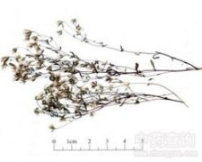

青叶胆

拼音
Qīnɡ Yè Dǎn
别名
青叶丹、青鱼胆、走胆药、肝炎草
来源
本品为龙胆科植物青叶胆Swertia mileensis T. N. He et W. L. Shi，的干燥全草。秋季花果期采收，除去泥沙，晒干。
生境分布
生于山野荒坡草地。分布云南、四川、贵州、广东、广西、湖南、福建等地。
药材特点
一年生茸本，高15～60厘米。根黄色或黄褐色，须根较少。茎方形，常带紫色.叶对生，狭披针形，长2～5厘米，宽0.3～0.7厘米，全缘；无柄。圆锥形聚伞花序，顶生或腋生；花蓝紫色；萼片4，线状披针形；花冠4深裂，裂片卵状披针形，基部有1个腺窝；雄蕊4；子房上位。蒴果，椭圆形。种子多数。
性状
本品长15～45cm。根长圆锥形，长2～7cm，直径约0.2cm,有的有分枝；表面黄色或黄棕色。茎四棱形，棱角具极狭的翅，直径0.1～0.2cm；表面黄绿色或黄棕色，下部常显红紫色，断面中空。叶对生，无柄；叶片多皱缩或破碎，完整者展平后呈条形或狭披针形，长1～4cm，宽0.2～0.7cm。圆锥状聚伞花序，萼片4,条形，黄绿色；花冠4,深裂，黄色，裂片卵状披针形，内侧基部具2腺窝；雄蕊4。蒴果狭卵形，种子多数，细小，棕褐色。气微，味苦。
性味
苦、甘，寒。
功能主治
清肝利胆，清热利湿。用于黄疸尿赤，热淋涩痛。
用法用量
10～15g。
化学成分
含黄酮甙、生物碱和香豆精。
药理作用
1：能显着降低大白鼠四氯化碳中毒性肝炎引起的血清谷丙转氨酶升高
2：对肝细胞有保护作用
摘录
《中国药典》